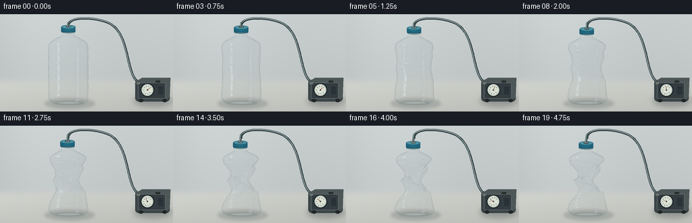
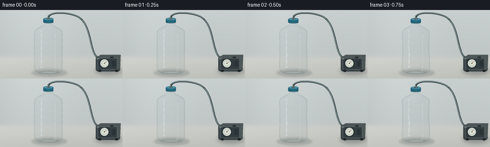

CODING AGENTS AS PIXEL WORLD MODELS
traex/GPT-6.1-Sol · mechanics_0023
点击播放 · 原生 RGB 像素
逐轮保存的候选
回放视频、检查图与代码变化。
每份候选均可单独播放。实际图片检查记录在下方工具轨迹中。
候选 01播放与检查图
点击播放 · 原生 RGB 像素


展开代码变化
--- 上一保存版本
+++ 本次保存版本
@@ -0,0 +1,219 @@
+from pathlib import Path
+import numpy as np
+from PIL import Image, ImageDraw, ImageFilter
+import artifact_io
+
+ROOT=Path(__file__).resolve().parent
+W,H=256,144
+S=3
+WW,HH=W*S,H*S
+CX,BASE=101,132
+
+def polyline(draw, pts, fill, width):
+ draw.line([(round(x*S),round(y*S)) for x,y in pts], fill=fill, width=max(1,round(width*S)), joint='curve')
+
+def ellipse(draw, box, fill, outline=None, width=1):
+ draw.ellipse(tuple(round(v*S) for v in box),fill=fill,outline=outline,width=max(1,round(width*S)))
+
+def bezier(a,b,c,d,n=100):
+ t=np.linspace(0,1,n)[:,None]
+ return (1-t)**3*np.array(a)+3*(1-t)**2*t*np.array(b)+3*(1-t)*t*t*np.array(c)+t**3*np.array(d)
+
+def backdrop():
+ yy,xx=np.mgrid[0:HH,0:WW].astype(float); x=xx/S;y=yy/S
+ # Diffuse off-white photography backdrop and warm grey tabletop.
+ v=.048*(x/W)+.055*np.exp(-((x-57)/100)**2)-.052*y/H
+ col=np.empty((HH,WW,3),float)
+ for c,b in enumerate([.74,.765,.765]): col[:,:,c]=b+v
+ floor=1/(1+np.exp(-(y-99)/2.8))
+ for c,b in enumerate([.79,.798,.777]):
+ col[:,:,c]=col[:,:,c]*(1-floor)+(b+.033*(1-x/W)-.055*(y-99)/45)*floor
+ rng=np.random.default_rng(928)
+ col += rng.normal(0,.0007,(HH,WW,1))
+ im=Image.fromarray(np.uint8(np.clip(col,0,1)*255)).convert('RGB')
+ # Rounded miniature vacuum pump, at a distance to the right of the bottle.
+ shadow=Image.new('RGBA',(WW,HH));d=ImageDraw.Draw(shadow)
+ ellipse(d,(198,120,254,136),(33,41,44,72))
+ shadow=shadow.filter(ImageFilter.GaussianBlur(4*S));im=Image.alpha_composite(im.convert('RGBA'),shadow)
+ d=ImageDraw.Draw(im)
+ # Back hose curls from a sealed cap to the air inlet.
+ hose=np.concatenate([bezier((101,19),(98,2),(137,4),(156,11)),bezier((156,11),(195,23),(183,91),(207,102))])
+ polyline(d,hose,(37,52,55),3.2)
+ polyline(d,hose+np.array([-.3,-.35]),(118,135,136),1.8)
+ polyline(d,hose+np.array([-.45,-.65]),(170,183,181),.48)
+ # Pump housing.
+ d.rounded_rectangle((200*S,97*S,251*S,129*S),radius=5*S,fill=(58,68,71))
+ d.polygon([(200*S,100*S),(210*S,94*S),(252*S,94*S),(251*S,122*S),(244*S,129*S),(244*S,103*S)],fill=(78,87,88))
+ d.rounded_rectangle((204*S,101*S,245*S,125*S),radius=3*S,fill=(51,60,64),outline=(96,103,103),width=S)
+ for i in range(5):
+ polyline(d,[(234,108+i*2.3),(241,108+i*2.3)],(27,36,39),.9)
+ # Unmarked gauge, useful extraction context without captions.
+ ellipse(d,(208,102,228,122),(23,31,33))
+ ellipse(d,(209.5,103.5,226.5,120.5),(197,206,197))
+ ellipse(d,(211,105,225,119),(219,225,213))
+ for a in np.linspace(.25*np.pi,1.8*np.pi,9):
+ p0=(218+6.1*np.cos(a),112+6.1*np.sin(a));p1=(218+5*np.cos(a),112+5*np.sin(a))
+ polyline(d,[p0,p1],(65,76,73),.5)
+ ellipse(d,(217,111,219,113),(66,76,71))
+ polyline(d,[(202,102),(207,102)],(107,119,115),3)
+ d.rounded_rectangle((230*S,98*S,237*S,101*S),radius=S,fill=(39,46,46))
+ ellipse(d,(205,125,212,130),(33,39,40));ellipse(d,(240,125,247,130),(33,39,40))
+ return im
+
+BG=backdrop()
+
+def mesh(p):
+ # One thin continuous PET shell: rigid mouth and heel, collapsible middle.
+ h=np.linspace(0,107,160)
+ ang=np.linspace(0,2*np.pi,96,endpoint=False)
+ hh,aa=np.meshgrid(h,ang,indexing='ij')
+ r=np.interp(h,[0,1.5,4,8,12,16,82,87,91,96,100,102,107],
+ [21,25,28,29.5,29.3,29.5,29.5,29,26,18,10,9,9])[:,None]*np.ones_like(aa)
+ # Injection moulded heel with five shallow feet.
+ r += 1.2*np.cos(5*aa)*np.exp(-((hh-3)/4)**2)
+ for band in [15,29,43,57,71,83]:
+ r += .52*np.exp(-((hh-band)/.65)**2)-.25*np.exp(-((hh-band-1.2)/.7)**2)
+ for band in [102,104,106]:
+ r += .5*np.exp(-((hh-band)/.5)**2)
+ env=np.maximum(0,np.sin(np.pi*np.clip((hh-10)/83,0,1)))**.9
+ right=(np.cos(aa)+1)/2
+ # Asymmetric sidewall implosion; localized hinges make concave silhouettes.
+ dentL=.34*np.exp(-((hh-67)/11)**2)+.30*np.exp(-((hh-39)/10)**2)
+ dentR=.43*np.exp(-((hh-54)/13)**2)+.16*np.exp(-((hh-78)/6)**2)
+ lateral=1-p*(.28*env+dentL*(1-right)+dentR*right)
+ x=r*np.cos(aa)*lateral
+ z=r*.77*np.sin(aa)*(1-.57*p*env)
+ frontdent=np.exp(-((aa-np.pi/2)/.58)**2)
+ backdent=np.exp(-((aa-3*np.pi/2)/.65)**2)
+ z-=p*8*np.exp(-((hh-58)/17)**2)*frontdent
+ z+=p*7*np.exp(-((hh-44)/15)**2)*backdent
+ # Diagonal sharp ridges emerge with the collapse, not uniform scaling.
+ wrinkle=np.zeros_like(hh)
+ for center,slope,amp in [(29,7,1.6),(47,-11,2.7),(64,10,2.8),(78,-5,1.8)]:
+ hinge=center+slope*np.cos(aa)+2*np.sin(2*aa)
+ wrinkle+=amp*np.exp(-((hh-hinge)/1.4)**2)-1.6*amp*np.exp(-((hh-hinge-2.0)/1.8)**2)
+ wrinkle*=p**1.5*env
+ x+=wrinkle*np.cos(aa)
+ z+=wrinkle*np.sin(aa)
+ # Small longitudinal accordion puckers connecting the diagonal folds.
+ fine=p**1.7*1.15*np.sin(7*aa+.24*hh)*env**2
+ x+=fine*np.cos(aa);z+=fine*np.sin(aa)
+ x+=p*(1.9*np.sin(hh*.06)*env-1.8*np.clip((hh-80)/25,0,1))
+ height=hh-7*p*np.clip((hh-9)/94,0,1)
+ height+=p*1.2*np.sin(3*aa+.09*hh)*env
+ verts=np.stack([x,height,z],axis=-1)
+ du=np.roll(verts,-1,axis=1)-np.roll(verts,1,axis=1)
+ dv=np.gradient(verts,axis=0)
+ normal=np.cross(dv,du)
+ normal/=np.maximum(np.linalg.norm(normal,axis=-1,keepdims=True),1e-9)
+ # Outward normals.
+ dot=normal[:,:,0]*np.cos(aa)+normal[:,:,2]*np.sin(aa)
+ normal=np.where((dot<0)[:,:,None],-normal,normal)
+ return verts,normal
+
+# Shared mesh indices.
+idx=np.arange(160*96).reshape(160,96)
+a=idx[:-1].reshape(-1);b=np.roll(idx[:-1],-1,axis=1).reshape(-1)
+c=idx[1:].reshape(-1);d=np.roll(idx[1:],-1,axis=1).reshape(-1)
+TRIS=np.concatenate([np.stack([a,c,b],axis=1),np.stack([b,c,d],axis=1)])
+
+def render_shell(im,p):
+ verts,norm=mesh(p)
+ v=verts.reshape(-1,3);n=norm.reshape(-1,3)
+ # Studio reflection model for colorless PET film. Two elongated softboxes.
+ nx,ny,nz=n.T
+ view=np.abs(nz-.105*ny)
+ fres=.025+.975*(1-np.clip(view,0,1))**4
+ # Reflection vector towards a studio with tall narrow luminous windows.
+ reflect_x=2*nz*nx;reflect_y=2*nz*ny;reflect_z=2*nz*nz-1
+ spec1=np.exp(-((reflect_x+.72)/.115)**2-((reflect_y-.13)/.58)**2)*(reflect_z>.1)
+ spec2=np.exp(-((reflect_x-.68)/.055)**2-((reflect_y-.1)/.65)**2)*(reflect_z>-.15)
+ wide=np.exp(-((reflect_x+.17)/.8)**2-((reflect_y-.65)/.36)**2)*(reflect_z>.05)
+ shade=.58+.17*np.maximum(0,-.55*nx+.68*ny+.47*nz)
+ rgb=np.stack([shade*.90,shade*1.00,shade*1.025],axis=1)
+ # Dark reflection at contours, white specular ribbons and fold highlights.
+ edge=.35+.16*np.maximum(0,-nx)
+ rgb=rgb*(1-fres[:,None]) + np.array([.33,.42,.44])[None,:]*fres[:,None]
+ spec=np.clip(.79*spec1+.68*spec2+.30*wide,0,.98)
+ rgb=rgb*(1-spec[:,None])+np.array([.975,.985,.98])*spec[:,None]
+ alpha=.052+.40*fres+.62*spec
+ # Rear face film must remain subtle, not turn the empty bottle opaque.
+ alpha*=np.where(nz>0,1.,.58)
+ rgba=np.column_stack([rgb,np.minimum(.85,alpha)])
+ pos=np.column_stack([(CX+v[:,0])*S,(BASE-v[:,1]-.10*v[:,2])*S])
+ buf=np.asarray(im.convert('RGB')).astype(np.float32)/255
+ order=np.argsort(np.mean(v[TRIS,2],axis=1))
+ for ix in order:
+ ids=TRIS[ix]; vv=pos[ids]; colors=rgba[ids]
+ x0=max(0,int(np.floor(vv[:,0].min())));x1=min(WW-1,int(np.ceil(vv[:,0].max())))
+ y0=max(0,int(np.floor(vv[:,1].min())));y1=min(HH-1,int(np.ceil(vv[:,1].max())))
+ if x0>x1 or y0>y1:continue
+ ax,ay=vv[0];bx,by=vv[1];cx,cy=vv[2]
+ den=(by-cy)*(ax-cx)+(cx-bx)*(ay-cy)
+ if abs(den)<1e-7:continue
+ Y,X=np.mgrid[y0:y1+1,x0:x1+1];X=X+.5;Y=Y+.5
+ w0=((by-cy)*(X-cx)+(cx-bx)*(Y-cy))/den
+ w1=((cy-ay)*(X-cx)+(ax-cx)*(Y-cy))/den
+ w2=1-w0-w1
+ mask=(w0>=0)&(w1>=0)&(w2>=0)
+ if not mask.any():continue
+ cc=w0[:,:,None]*colors[0]+w1[:,:,None]*colors[1]+w2[:,:,None]*colors[2]
+ al=cc[:,:,3:4]*mask[:,:,None]
+ old=buf[y0:y1+1,x0:x1+1]
+ old[:]=old*(1-al)+cc[:,:,:3]*al
+ return Image.fromarray(np.uint8(np.clip(buf,0,1)*255)).convert('RGBA')
+
+def finish_cap(im,p):
+ d=ImageDraw.Draw(im)
+ x=CX-1.8*p
+ top=BASE-(115-7*p)
+ # Sealed screw cap, with top elliptical perspective and moulded knurling.
+ y=top
+ ellipse(d,(x-10.4,y+6.6,x+10.4,y+11),(87,127,137))
+ d.rounded_rectangle((int((x-10.6)*S),int((y+1.9)*S),int((x+10.6)*S),int((y+9)*S)),radius=S,fill=(31,95,120))
+ for i in np.linspace(-9.5,9.5,17):
+ shade=int(74+25*(1-abs(i)/10))
+ polyline(d,[(x+i,y+3),(x+i,y+8.2)],(31,shade+23,shade+43),.52)
+ polyline(d,[(x-10,y+8.6),(x+10,y+8.6)],(17,68,88),.65)
+ ellipse(d,(x-10.6,y-1,x+10.6,y+4.8),(66,132,153),outline=(36,99,122),width=.5)
+ ellipse(d,(x-8.3,y-.1,x+8.3,y+3.5),(79,149,164))
+ polyline(d,[(x-6.5,y+.7),(x-3,y+.1),(x+2,y+.3)],(144,194,199),.55)
+ # Airtight port around the vacuum hose.
+ ellipse(d,(x-3.7,y-.3,x+3.7,y+2.5),(51,62,62))
+ ellipse(d,(x-2.6,y-.6,x+2.6,y+1.7),(156,170,169))
+ # The final short hose end follows the cap as the bottle shortens.
+ hose=bezier((101,13),(100,14),(x,y-1.2),(x,y+.35),30)
+ polyline(d,hose,(49,68,69),3.1)
+ polyline(d,hose+np.array([-.45,-.25]),(149,166,162),1.1)
+ return im
+
+def frame(i):
+ t=i/19
+ p=(t*t*(3-2*t))**.87
+ im=BG.copy()
+ # Contact shadow remains under the heel; diffuse body shadow contracts.
+ sh=Image.new('RGBA',(WW,HH));sd=ImageDraw.Draw(sh)
+ ellipse(sd,(CX-35,124,CX+39,140),(43,60,63,47))
+ ellipse(sd,(CX-23,129,CX+25,134),(30,48,48,84))
+ sh=sh.filter(ImageFilter.GaussianBlur(2.0*S))
+ im=Image.alpha_composite(im,sh)
+ # Faint stable refracted light on the desk, entirely below an empty bottle.
+ light=Image.new('RGBA',(WW,HH));ld=ImageDraw.Draw(light)
+ ellipse(ld,(CX-18,129,CX+20,133),(226,240,235,75))
+ light=light.filter(ImageFilter.GaussianBlur(.8*S));im=Image.alpha_composite(im,light)
+ im=render_shell(im,p)
+ im=finish_cap(im,p)
+ # Gauge needle moves gradually toward a lower pressure.
+ d=ImageDraw.Draw(im)
+ a=-.7-2.0*p
+ polyline(d,[(218,112),(218+4.7*np.cos(a),112+4.7*np.sin(a))],(164,61,45),.8)
+ ellipse(d,(217.1,111.1,218.9,112.9),(66,74,68))
+ return np.asarray(im.convert('RGB').resize((W,H),Image.Resampling.LANCZOS))
+
+if __name__=='__main__':
+ frames=[]
+ for i in range(20):
+ frames.append(frame(i))
+ print('Rendered',i,flush=True)
+ artifact_io.save(np.stack(frames),ROOT)
+ print('Saved RGB video artifacts.',flush=True)
可观测工具轨迹
实际执行的命令与返回图片。
命令 1exit 0
/bin/bash -lc 'ls -la && cat prompt.txt && cat GENERATION_RULES.md && cat task_spec.json'
命令 2exit 0
/bin/bash -lc "cat artifact_io.py && python - <<'PY'
import PIL,numpy
print('PIL/numpy available')
PY"命令 3exit 0
/bin/bash -lc "python - <<'PY' import importlib.util for p in ['numba','scipy']: print(p, bool(importlib.util.find_spec(p))) PY"
命令 4exit 0
/bin/bash -lc "cat > generate.py <<'PY'
from pathlib import Path
import numpy as np
from PIL import Image, ImageDraw, ImageFilter
import artifact_io
ROOT=Path(__file__).resolve().parent
W,H=256,144
S=3
WW,HH=W*S,H*S
CX,BASE=101,132
def polyline(draw, pts, fill, width):
draw.line([(round(x*S),round(y*S)) for x,y in pts], fill=fill, width=max(1,round(width*S)), joint='curve')
def ellipse(draw, box, fill, outline=None, width=1):
draw.ellipse(tuple(round(v*S) for v in box),fill=fill,outline=outline,width=max(1,round(width*S)))
def bezier(a,b,c,d,n=100):
t=np.linspace(0,1,n)[:,None]
return (1-t)**3*np.array(a)+3*(1-t)**2*t*np.array(b)+3*(1-t)*t*t*np.array(c)+t**3*np.array(d)
def backdrop():
yy,xx=np.mgrid[0:HH,0:WW].astype(float); x=xx/S;y=yy/S
# Diffuse off-white photography backdrop and warm grey tabletop.
v=.048*(x/W)+.055*np.exp(-((x-57)/100)**2)-.052*y/H
col=np.empty((HH,WW,3),float)
for c,b in enumerate([.74,.765,.765]): col[:,:,c]=b+v
floor=1/(1+np.exp(-(y-99)/2.8))
for c,b in enumerate([.79,.798,.777]):
col[:,:,c]=col[:,:,c]*(1-floor)+(b+.033*(1-x/W)-.055*(y-99)/45)*floor
rng=np.random.default_rng(928)
col += rng.normal(0,.0007,(HH,WW,1))
im=Image.fromarray(np.uint8(np.clip(col,0,1)*255)).convert('RGB')
# Rounded miniature vacuum pump, at a distance to the right of the bottle.
shadow=Image.new('RGBA',(WW,HH));d=ImageDraw.Draw(shadow)
ellipse(d,(198,120,254,136),(33,41,44,72))
shadow=shadow.filter(ImageFilter.GaussianBlur(4*S));im=Image.alpha_composite(im.convert('RGBA'),shadow)
d=ImageDraw.Draw(im)
# Back hose curls from a sealed cap to the air inlet.
hose=np.concatenate([bezier((101,19),(98,2),(137,4),(156,11)),bezier((156,11),(195,23),(183,91),(207,102))])
polyline(d,hose,(37,52,55),3.2)
polyline(d,hose+np.array([-.3,-.35]),(118,135,136),1.8)
polyline(d,hose+np.array([-.45,-.65]),(170,183,181),.48)
# Pump housing.
d.rounded_rectangle((200*S,97*S,251*S,129*S),radius=5*S,fill=(58,68,71))
d.polygon([(200*S,100*S),(210*S,94*S),(252*S,94*S),(251*S,122*S),(244*S,129*S),(244*S,103*S)],fill=(78,87,88))
d.rounded_rectangle((204*S,101*S,245*S,125*S),radius=3*S,fill=(51,60,64),outline=(96,103,103),width=S)
for i in range(5):
polyline(d,[(234,108+i*2.3),(241,108+i*2.3)],(27,36,39),.9)
# Unmarked gauge, useful extraction context without captions.
ellipse(d,(208,102,228,122),(23,31,33))
ellipse(d,(209.5,103.5,226.5,120.5),(197,206,197))
ellipse(d,(211,105,225,119),(219,225,213))
for a in np.linspace(.25*np.pi,1.8*np.pi,9):
p0=(218+6.1*np.cos(a),112+6.1*np.sin(a));p1=(218+5*np.cos(a),112+5*np.sin(a))
polyline(d,[p0,p1],(65,76,73),.5)
ellipse(d,(217,111,219,113),(66,76,71))
polyline(d,[(202,102),(207,102)],(107,119,115),3)
d.rounded_rectangle((230*S,98*S,237*S,101*S),radius=S,fill=(39,46,46))
ellipse(d,(205,125,212,130),(33,39,40));ellipse(d,(240,125,247,130),(33,39,40))
return im
BG=backdrop()
def mesh(p):
# One thin continuous PET shell: rigid mouth and heel, collapsible middle.
h=np.linspace(0,107,160)
ang=np.linspace(0,2*np.pi,96,endpoint=False)
hh,aa=np.meshgrid(h,ang,indexing='ij')
r=np.interp(h,[0,1.5,4,8,12,16,82,87,91,96,100,102,107],
[21,25,28,29.5,29.3,29.5,29.5,29,26,18,10,9,9])[:,None]*np.ones_like(aa)
# Injection moulded heel with five shallow feet.
r += 1.2*np.cos(5*aa)*np.exp(-((hh-3)/4)**2)
for band in [15,29,43,57,71,83]:
r += .52*np.exp(-((hh-band)/.65)**2)-.25*np.exp(-((hh-band-1.2)/.7)**2)
for band in [102,104,106]:
r += .5*np.exp(-((hh-band)/.5)**2)
env=np.maximum(0,np.sin(np.pi*np.clip((hh-10)/83,0,1)))**.9
right=(np.cos(aa)+1)/2
# Asymmetric sidewall implosion; localized hinges make concave silhouettes.
dentL=.34*np.exp(-((hh-67)/11)**2)+.30*np.exp(-((hh-39)/10)**2)
dentR=.43*np.exp(-((hh-54)/13)**2)+.16*np.exp(-((hh-78)/6)**2)
lateral=1-p*(.28*env+dentL*(1-right)+dentR*right)
x=r*np.cos(aa)*lateral
z=r*.77*np.sin(aa)*(1-.57*p*env)
frontdent=np.exp(-((aa-np.pi/2)/.58)**2)
backdent=np.exp(-((aa-3*np.pi/2)/.65)**2)
z-=p*8*np.exp(-((hh-58)/17)**2)*frontdent
z+=p*7*np.exp(-((hh-44)/15)**2)*backdent
# Diagonal sharp ridges emerge with the collapse, not uniform scaling.
wrinkle=np.zeros_like(hh)
for center,slope,amp in [(29,7,1.6),(47,-11,2.7),(64,10,2.8),(78,-5,1.8)]:
hinge=center+slope*np.cos(aa)+2*np.sin(2*aa)
wrinkle+=amp*np.exp(-((hh-hinge)/1.4)**2)-1.6*amp*np.exp(-((hh-hinge-2.0)/1.8)**2)
wrinkle*=p**1.5*env
x+=wrinkle*np.cos(aa)
z+=wrinkle*np.sin(aa)
# Small longitudinal accordion puckers connecting the diagonal folds.
fine=p**1.7*1.15*np.sin(7*aa+.24*hh)*env**2
x+=fine*np.cos(aa);z+=fine*np.sin(aa)
x+=p*(1.9*np.sin(hh*.06)*env-1.8*np.clip((hh-80)/25,0,1))
height=hh-7*p*np.clip((hh-9)/94,0,1)
height+=p*1.2*np.sin(3*aa+.09*hh)*env
verts=np.stack([x,height,z],axis=-1)
du=np.roll(verts,-1,axis=1)-np.roll(verts,1,axis=1)
dv=np.gradient(verts,axis=0)
normal=np.cross(dv,du)
normal/=np.maximum(np.linalg.norm(normal,axis=-1,keepdims=True),1e-9)
# Outward normals.
dot=normal[:,:,0]*np.cos(aa)+normal[:,:,2]*np.sin(aa)
normal=np.where((dot<0)[:,:,None],-normal,normal)
return verts,normal
# Shared mesh indices.
idx=np.arange(160*96).reshape(160,96)
a=idx[:-1].reshape(-1);b=np.roll(idx[:-1],-1,axis=1).reshape(-1)
c=idx[1:].reshape(-1);d=np.roll(idx[1:],-1,axis=1).reshape(-1)
TRIS=np.concatenate([np.stack([a,c,b],axis=1),np.stack([b,c,d],axis=1)])
def render_shell(im,p):
verts,norm=mesh(p)
v=verts.reshape(-1,3);n=norm.reshape(-1,3)
# Studio reflection model for colorless PET film. Two elongated softboxes.
nx,ny,nz=n.T
view=np.abs(nz-.105*ny)
fres=.025+.975*(1-np.clip(view,0,1))**4
# Reflection vector towards a studio with tall narrow luminous windows.
reflect_x=2*nz*nx;reflect_y=2*nz*ny;reflect_z=2*nz*nz-1
spec1=np.exp(-((reflect_x+.72)/.115)**2-((reflect_y-.13)/.58)**2)*(reflect_z>.1)
spec2=np.exp(-((reflect_x-.68)/.055)**2-((reflect_y-.1)/.65)**2)*(reflect_z>-.15)
wide=np.exp(-((reflect_x+.17)/.8)**2-((reflect_y-.65)/.36)**2)*(reflect_z>.05)
shade=.58+.17*np.maximum(0,-.55*nx+.68*ny+.47*nz)
rgb=np.stack([shade*.90,shade*1.00,shade*1.025],axis=1)
# Dark reflection at contours, white specular ribbons and fold highlights.
edge=.35+.16*np.maximum(0,-nx)
rgb=rgb*(1-fres[:,None]) + np.array([.33,.42,.44])[None,:]*fres[:,None]
spec=np.clip(.79*spec1+.68*spec2+.30*wide,0,.98)
rgb=rgb*(1-spec[:,None])+np.array([.975,.985,.98])*spec[:,None]
alpha=.052+.40*fres+.62*spec
# Rear face film must remain subtle, not turn the empty bottle opaque.
alpha*=np.where(nz>0,1.,.58)
rgba=np.column_stack([rgb,np.minimum(.85,alpha)])
pos=np.column_stack([(CX+v[:,0])*S,(BASE-v[:,1]-.10*v[:,2])*S])
buf=np.asarray(im.convert('RGB')).astype(np.float32)/255
order=np.argsort(np.mean(v[TRIS,2],axis=1))
for ix in order:
ids=TRIS[ix]; vv=pos[ids]; colors=rgba[ids]
x0=max(0,int(np.floor(vv[:,0].min())));x1=min(WW-1,int(np.ceil(vv[:,0].max())))
y0=max(0,int(np.floor(vv[:,1].min())));y1=min(HH-1,int(np.ceil(vv[:,1].max())))
if x0>x1 or y0>y1:continue
ax,ay=vv[0];bx,by=vv[1];cx,cy=vv[2]
den=(by-cy)*(ax-cx)+(cx-bx)*(ay-cy)
if abs(den)<1e-7:continue
Y,X=np.mgrid[y0:y1+1,x0:x1+1];X=X+.5;Y=Y+.5
w0=((by-cy)*(X-cx)+(cx-bx)*(Y-cy))/den
w1=((cy-ay)*(X-cx)+(ax-cx)*(Y-cy))/den
w2=1-w0-w1
mask=(w0>=0)&(w1>=0)&(w2>=0)
if not mask.any():continue
cc=w0[:,:,None]*colors[0]+w1[:,:,None]*colors[1]+w2[:,:,None]*colors[2]
al=cc[:,:,3:4]*mask[:,:,None]
old=buf[y0:y1+1,x0:x1+1]
old[:]=old*(1-al)+cc[:,:,:3]*al
return Image.fromarray(np.uint8(np.clip(buf,0,1)*255)).convert('RGBA')
def finish_cap(im,p):
d=ImageDraw.Draw(im)
x=CX-1.8*p
top=BASE-(115-7*p)
# Sealed screw cap, with top elliptical perspective and moulded knurling.
y=top
ellipse(d,(x-10.4,y+6.6,x+10.4,y+11),(87,127,137))
d.rounded_rectangle((int((x-10.6)*S),int((y+1.9)*S),int((x+10.6)*S),int((y+9)*S)),radius=S,fill=(31,95,120))
for i in np.linspace(-9.5,9.5,17):
shade=int(74+25*(1-abs(i)/10))
polyline(d,[(x+i,y+3),(x+i,y+8.2)],(31,shade+23,shade+43),.52)
polyline(d,[(x-10,y+8.6),(x+10,y+8.6)],(17,68,88),.65)
ellipse(d,(x-10.6,y-1,x+10.6,y+4.8),(66,132,153),outline=(36,99,122),width=.5)
ellipse(d,(x-8.3,y-.1,x+8.3,y+3.5),(79,149,164))
polyline(d,[(x-6.5,y+.7),(x-3,y+.1),(x+2,y+.3)],(144,194,199),.55)
# Airtight port around the vacuum hose.
ellipse(d,(x-3.7,y-.3,x+3.7,y+2.5),(51,62,62))
ellipse(d,(x-2.6,y-.6,x+2.6,y+1.7),(156,170,169))
# The final short hose end follows the cap as the bottle shortens.
hose=bezier((101,13),(100,14),(x,y-1.2),(x,y+.35),30)
polyline(d,hose,(49,68,69),3.1)
polyline(d,hose+np.array([-.45,-.25]),(149,166,162),1.1)
return im
def frame(i):
t=i/19
p=(t*t*(3-2*t))**.87
im=BG.copy()
# Contact shadow remains under the heel; diffuse body shadow contracts.
sh=Image.new('RGBA',(WW,HH));sd=ImageDraw.Draw(sh)
ellipse(sd,(CX-35,124,CX+39,140),(43,60,63,47))
ellipse(sd,(CX-23,129,CX+25,134),(30,48,48,84))
sh=sh.filter(ImageFilter.GaussianBlur(2.0*S))
im=Image.alpha_composite(im,sh)
# Faint stable refracted light on the desk, entirely below an empty bottle.
light=Image.new('RGBA',(WW,HH));ld=ImageDraw.Draw(light)
ellipse(ld,(CX-18,129,CX+20,133),(226,240,235,75))
light=light.filter(ImageFilter.GaussianBlur(.8*S));im=Image.alpha_composite(im,light)
im=render_shell(im,p)
im=finish_cap(im,p)
# Gauge needle moves gradually toward a lower pressure.
d=ImageDraw.Draw(im)
a=-.7-2.0*p
polyline(d,[(218,112),(218+4.7*np.cos(a),112+4.7*np.sin(a))],(164,61,45),.8)
ellipse(d,(217.1,111.1,218.9,112.9),(66,74,68))
return np.asarray(im.convert('RGB').resize((W,H),Image.Resampling.LANCZOS))
if __name__=='__main__':
frames=[]
for i in range(20):
frames.append(frame(i))
print('Rendered',i,flush=True)
artifact_io.save(np.stack(frames),ROOT)
print('Saved RGB video artifacts.',flush=True)
PY
OPENBLAS_NUM_THREADS=1 python generate.py"命令 5exit 0
/bin/bash -lc "ls -lh generate.py pixels.npz index.html inspection.png && python - <<'PY'
import numpy as np
from PIL import Image
from pathlib import Path
files=sorted(Path('frames').glob('*.png'))
assert len(files)==20
assert all(Image.open(f).size==(256,144) and Image.open(f).mode=='RGB' for f in files)
p=np.load('pixels.npz')['pixels']
assert p.shape==(144,256,20)
print('Verified: 20 RGB frames, 256Ã144; 4 fps / 5 seconds.')
PY"视觉工具实际返回图片 1

保存候选 1 份；完成命令 5 次；可验证图片返回 1 张。原始 API 响应与完整日志保留在本地。